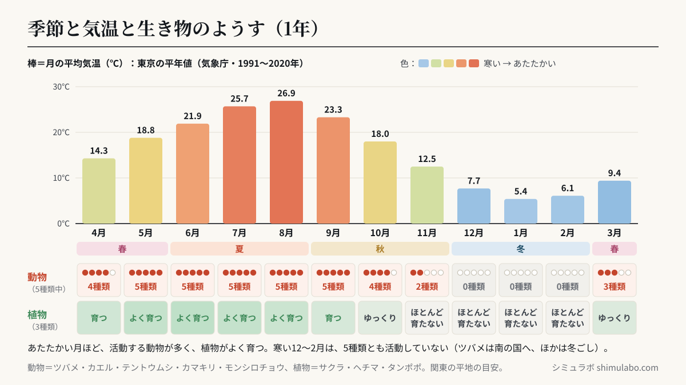
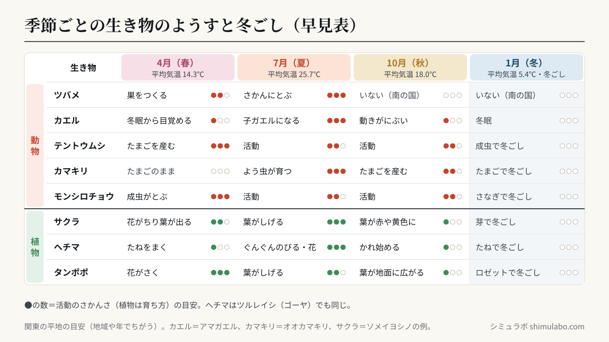

このシミュレーションでわかること
小学校4年の理科「季節と生物」（学習指導要領 第4学年 B（2））で学ぶ内容です。学習指導要領の解説（理科編 pp.54〜56）は、身近な動物は暖かい季節には数が多く活発に活動し、寒い季節には活動がにぶくなったり卵で冬をこしたりすること、植物は暖かくなる夏までは体全体がよく成長し、寒くなると成長がほとんど見られず、種子をつくってかれたり形を変えて冬をこしたりすることをとらえるようにするとしています。内容の取扱いでは、1年を通じて動物の活動や植物の成長をそれぞれ2種類以上観察することになっています。
月のスライダー（4月〜3月）を動かすと、その月の平均気温のグラフ（東京の平年値）と、動物5種類（ツバメ・カエル・テントウムシ・カマキリ・モンシロチョウ）、植物3種類（サクラ・ヘチマまたはツルレイシ・タンポポ）のようすが変わります。「この月を記録カードに」で選んだ月を最大4まいならべて、観察カードのようにくらべることができます。
授業での使い方
- 導入：春の観察の前に、「ツバメはいつごろやってくるかな」「冬の間、カエルやテントウムシはどこにいるのかな」と予想させます。今の月を選んで、これから観察する生き物を決めるのにも使えます。
- 展開：1年間の観察で、実際の記録とシミュレーションの記録カードをくらべます。夏休みや冬休みなど、学校で観察できない時期のようすを補うのに使えます。地域によって時期はちがうので、「自分たちの町ではどうだったか」も話し合います。
- まとめ：「春夏秋冬の4まい」で4つの月をならべ、気温のグラフと見くらべて、「気温が高い季節ほど、動物の活動がさかんで、植物がよく育つ」ことを説明させます。冬ごしのすがたが生き物によってちがうことを表にまとめます。画面のアドレスの最後に
#kirokuを付けると、記録カードの画面から始まります。
児童への問いの例：
- 気温のグラフと、活動している動物の数の折れ線を見くらべると、どんな関係があるでしょう。
- ツバメ・カエル・テントウムシ・カマキリ・モンシロチョウは、それぞれどんなすがたで冬をこすでしょう。
- ヘチマのくきが いちばんよくのびるのは、どの季節でしょう。それはなぜでしょう。
しくみ・解説






図はタップすると大きく表示されます。授業のプリント・スライド・板書計画に自由に使えます（出典「シミュラボ」とページのURLを添えてください）。
ことばの意味
- 冬ごし（越冬）とは、生き物が寒い冬を、すがたや場所を変えてのりこえることです。
- 冬眠とは、カエルやヘビ、クマなどが、冬の間 土の中や穴の中で、ほとんど動かずにすごすことです。
- 平年値とは、気象庁が過去30年間（今は1991〜2020年）の観測をもとに計算した、その場所の「ふつうの年」の値です。
東京の月ごとの平均気温（平年値）
| 月 | 平均気温 | 季節 | 活動している動物（5種類中） | 植物のようす |
|---|---|---|---|---|
| 4月 | 14.3℃ | 春 | 4種類 | 育つ |
| 5月 | 18.8℃ | 春 | 5種類 | よく育つ |
| 6月 | 21.9℃ | 夏 | 5種類 | よく育つ |
| 7月 | 25.7℃ | 夏 | 5種類 | よく育つ |
| 8月 | 26.9℃ | 夏 | 5種類 | よく育つ |
| 9月 | 23.3℃ | 秋 | 5種類 | 育つ |
| 10月 | 18.0℃ | 秋 | 4種類 | ゆっくり |
| 11月 | 12.5℃ | 秋 | 2種類 | ほとんど育たない |
| 12月 | 7.7℃ | 冬 | 0種類 | ほとんど育たない |
| 1月 | 5.4℃ | 冬 | 0種類 | ほとんど育たない |
| 2月 | 6.1℃ | 冬 | 0種類 | ほとんど育たない |
| 3月 | 9.4℃ | 春 | 3種類 | ゆっくり |
いちばん気温が高いのは8月（26.9℃）、いちばん低いのは1月（5.4℃）で、その差は21.5℃です。1年の平均は15.8℃です。気温が高い5月〜9月は5種類の動物がすべて活動していて、いちばん寒い12月〜2月（平均気温がおよそ8℃より低い月）は、どの動物も活動していません（ツバメは南の国へわたり、ほかの4種類は冬ごしをしています）。
季節ごとのようす（早見表）
| 月 | 平均気温 | ツバメ | カエル | テントウムシ | カマキリ | モンシロチョウ | サクラ | ヘチマ | タンポポ |
|---|---|---|---|---|---|---|---|---|---|
| 4月（春） | 14.3℃ | 巣をつくる | 冬眠から目覚める | たまごを産む | たまごのまま | 成虫がとぶ | 花がちり葉が出る | たねをまく | 花がさく |
| 7月（夏） | 25.7℃ | さかんにとぶ | 子ガエルになる | 活動 | よう虫が育つ | 活動 | 葉がしげる | ぐんぐんのびる・花 | 葉がしげる |
| 10月（秋） | 18.0℃ | いない | 動きがにぶい | 活動 | たまごを産む | 活動 | 葉が赤や黄色に | かれ始める | 葉が地面に広がる |
| 1月（冬） | 5.4℃ | いない | 冬眠 | 成虫で冬ごし | たまごで冬ごし | さなぎで冬ごし | 芽で冬ごし | たねで冬ごし | ロゼットで冬ごし |
動物の冬ごし（早見表）
| 動物 | 冬をこすすがた | 冬をこす場所 |
|---|---|---|
| ツバメ | あたたかい南の国へわたる | 日本にはいない |
| カエル | 大人のカエル | 土の中・落ち葉の下（冬眠） |
| テントウムシ | 成虫 | 落ち葉の下・石のかげ（集まって） |
| カマキリ | たまご（らんのう） | 木のえだ・草のくき |
| モンシロチョウ | さなぎ | かべ・木のえだ・へい |
| バッタ（参考） | たまご | 土の中 |
| アゲハ（参考） | さなぎ | 木のえだ・かべ |
植物の冬ごし（早見表）
| 植物 | 冬のすがた |
|---|---|
| サクラ | 葉を落とし、えだの芽（冬芽）で冬をこす |
| ヘチマ・ツルレイシ | 体はかれて、たねで冬をこす |
| タンポポ | 葉を地面に広げた形（ロゼット）で冬をこす |
観察するときの注意
- 同じ場所の、同じ生き物を、決まった間かく（1週間〜1か月ごと）で観察し、気温もいっしょに記録します。
- 生き物や土にさわったあとは、石けんで手をあらいましょう。ハチや毒のある毛虫には近づかないようにします。
- 冬ごし中の生き物（落ち葉の下のテントウムシ、らんのう、さなぎなど）は、見たら元にもどし、持ち帰らないようにしましょう。
このシミュレーションで単純にしていること
- 気温は東京の平年値です。生き物のようすは関東地方の平地のおよその目安で、地域や年によって時期がちがいます（北の地方や山では春がおそく、冬が早く来ます）。
- カエルはアマガエル、テントウムシはナナホシテントウ、カマキリはオオカマキリ、サクラはソメイヨシノの例です。種類によって時期がちがいます（たとえばヒキガエルは2〜3月ごろにたまごを産みます）。
- 「活動している動物の数」は、その月にふつうに活動しているすがたが見られるものを数えた目安です。絵は形をわかりやすくした模式図です。
参考
- 文部科学省「小学校学習指導要領（平成29年告示）解説 理科編」第4学年 B（2）季節と生物（pp.54〜56）（文部科学省 小学校学習指導要領解説のページ）
- 気象庁「過去の気象データ検索」東京の平年値（1991〜2020年）（気象庁 平年値（年・月ごとの値）東京）
- 小学校理科（4年）の教科書の「季節と生き物」（春・夏・秋・冬の生き物）の単元
引用・転載について
本ページのシミュレーション結果・数値は、出典を明記いただければブログ・ニュース記事・SNS・授業や社内資料への引用を歓迎します。事前連絡は不要です。
出典：シミュラボ「季節と生き物シミュレーター（気温と動物の活動・植物の成長・冬ごし）」 https://shimulabo.com/sims/kisetsu-seibutsu/よくある質問
- 季節によって、動物の活動はどう変わりますか？
- あたたかい季節には数が多く、さかんに活動します。寒くなると活動がにぶくなり、冬はたまご・よう虫・さなぎ・成虫などのすがたで、土の中や落ち葉の下などでじっと冬をこします。ツバメのように、あたたかい南の国へわたる鳥もいます。
- 季節によって、植物の成長はどう変わりますか？
- あたたかくなる春から夏にかけて、くきがよくのびて葉がしげります。すずしくなると成長がゆっくりになり、実やたねをつくります。冬は、たねを残してかれたり（ヘチマ）、葉を落として芽で冬をこしたり（サクラ）、葉を地面に広げて冬をこしたり（タンポポ）します。
- 東京の月ごとの平均気温は何℃ですか？
- 気象庁の平年値（1991〜2020年）で、4月14.3℃、5月18.8℃、6月21.9℃、7月25.7℃、8月26.9℃、9月23.3℃、10月18.0℃、11月12.5℃、12月7.7℃、1月5.4℃、2月6.1℃、3月9.4℃です。1年の平均は15.8℃です。
- テントウムシやカマキリは、どのように冬をこしますか？
- ナナホシテントウは成虫のまま、落ち葉の下や石のかげなどに集まって冬をこします。オオカマキリは、秋にあわでつつんだたまご（らんのう）を産み、たまごで冬をこします。
- ツバメは冬の間どこにいますか？
- 日本で子育てをしたツバメの多くは、秋にあたたかい南の国（東南アジアなど）へわたり、冬をすごします。春になると、また日本にやってきて巣をつくります。